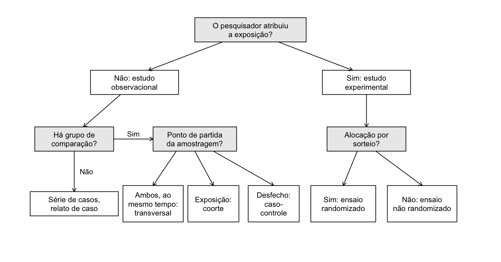
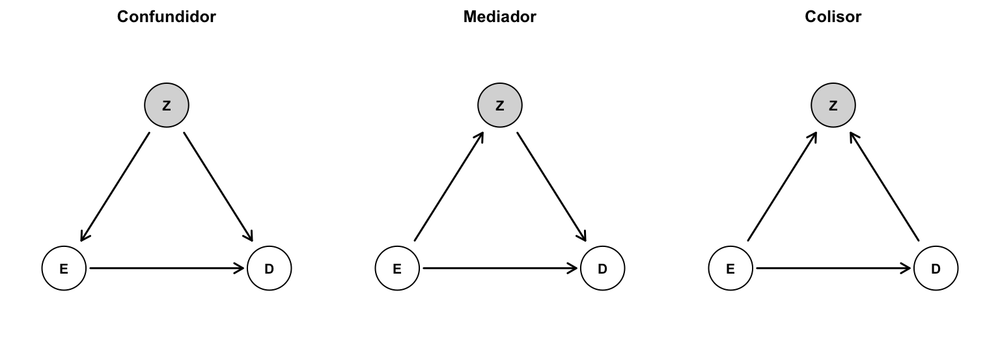
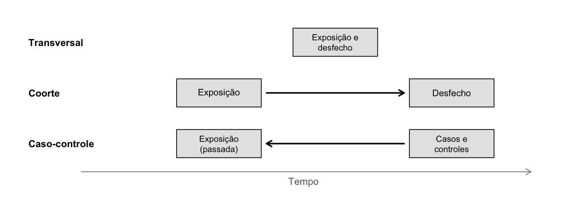

Capítulo 4 Desenhos de pesquisa
Hércules Rezende Freitas, Ph.D.\(^1\)
\(^1\)Universidade do Estado do Rio de Janeiro (UERJ), Faculdade de Ciências Médicas, Departamento de Ciências Médicas Integradas, Laboratório de Informática em Saúde (LabInfoS), Cabo Frio/RJ, Brasil.
O desenho de um estudo é o plano que define quem será estudado, o que será medido, quando e como. Ele determina, mais do que qualquer análise estatística, o que o estudo é capaz de responder. Nenhum método de análise, por mais sofisticado, recupera a informação que o desenho não coletou, nem corrige os vieses que o desenho introduziu. Por isso, os capítulos de bioestatística deste livro supõem, repetidamente, que os dados vieram de um estudo bem desenhado, e é deste capítulo que essa suposição depende.
O capítulo começa pelas ferramentas comuns a todos os desenhos: as medidas de frequência e de associação, e as três ameaças à validade de um estudo (erro aleatório, viés e confusão). Em seguida, apresenta os principais desenhos observacionais (transversal, coorte e caso-controle), os ensaios clínicos randomizados e, por fim, os princípios do desenho de experimentos de laboratório.
4.1 Da pergunta ao desenho
4.1.1 A pergunta de pesquisa
Todo desenho começa por uma pergunta bem formulada. Em pesquisa clínica, um formato útil é o acrônimo PICO (ou PECO, em estudos observacionais):
- População: quem são os participantes (por exemplo, adultos com hipertensão estágio 1 atendidos na atenção primária);
- Intervenção ou Exposição: o que se quer avaliar (um anti-hipertensivo, o consumo de sódio);
- Comparador: em relação a quê (placebo, outro tratamento, ausência de exposição);
- O (outcome), desfecho: o que será medido e quando (pressão arterial em 12 semanas, acidente vascular cerebral em cinco anos).
A pergunta também define o tipo de resposta buscada. Perguntas descritivas querem saber como algo é ou quanto há (qual a prevalência de hipertensão em adultos de Cabo Frio?). Perguntas analíticas ou causais querem saber se uma exposição altera um desfecho (o consumo de sódio aumenta a pressão arterial?). Perguntas preditivas querem estimar o risco de um indivíduo (qual a chance de este paciente ter um AVC em cinco anos?). Os desenhos e as análises adequados a cada tipo são diferentes, e muitos problemas na literatura surgem de estudos que não deixam claro qual pergunta estão respondendo. A formulação de problemas e hipóteses é tratada em detalhe no capítulo Formulação de problemas e hipóteses.
4.1.2 Uma classificação dos desenhos
A primeira distinção é entre estudos observacionais e experimentais. Nos observacionais, o pesquisador observa as exposições como elas ocorrem, sem interferir: as pessoas fumam ou não por razões próprias. Nos experimentais, o pesquisador atribui a exposição: decide quem recebe o tratamento. Quando a atribuição é feita por sorteio, o estudo é randomizado. A Figura 4.1 organiza os desenhos tratados neste capítulo.

Figura 4.1: Classificação dos principais desenhos de estudo segundo a atribuição da exposição e a existência de grupo de comparação.
É comum apresentar os desenhos em uma “pirâmide de evidências”, com relatos de caso na base e revisões sistemáticas de ensaios randomizados no topo. A pirâmide é uma simplificação útil, mas enganosa se tomada ao pé da letra. O desenho mais adequado depende da pergunta: para estimar a prevalência de uma doença, um estudo transversal com amostra representativa é o desenho correto, e um ensaio clínico não faria sentido; para estudar efeitos adversos raros e tardios, coortes grandes ou estudos caso-controle são frequentemente a única opção viável. E um ensaio randomizado mal conduzido pode fornecer evidência mais fraca que uma coorte bem conduzida. A qualidade da execução importa tanto quanto o rótulo do desenho.
4.2 Medidas de frequência e de associação
4.2.1 Prevalência e incidência
As duas medidas fundamentais de frequência de doença respondem a perguntas diferentes.
A prevalência é a proporção de pessoas que têm a condição em um momento:
\[ \text{Prevalência} = \frac{\text{número de pessoas com a condição em um momento}}{\text{número de pessoas na população nesse momento}} . \]
É uma medida de carga: informa quanto da população está afetado e é útil para o planejamento de serviços. Mas mistura duas coisas: quantos casos surgem e quanto tempo eles duram. Uma doença crônica e pouco letal acumula casos e tem prevalência alta, mesmo que surjam poucos casos novos por ano. Aproximadamente, em uma população estável, prevalência ≈ incidência × duração média.
A incidência mede o surgimento de casos novos em pessoas que estavam livres da condição. Há duas formas principais:
- incidência cumulativa (ou risco): proporção de pessoas inicialmente sem a doença que a desenvolvem em um período definido. Exige que todos sejam acompanhados durante todo o período e precisa sempre vir acompanhada desse período (“risco de 4% em cinco anos”; um risco sem período não tem significado);
- taxa de incidência (ou densidade de incidência): número de casos novos dividido pela soma dos tempos em que cada pessoa esteve em risco (a pessoa-tempo). Se 10 casos ocorrem em 2.000 pessoas-ano de acompanhamento, a taxa é de 5 por 1.000 pessoas-ano. A taxa acomoda acompanhamentos de durações diferentes, comuns em coortes reais.
4.2.2 Medidas de associação em tabelas 2 × 2
Para comparar a frequência do desfecho entre expostos e não expostos, os dados são organizados em uma tabela 2 × 2 com a notação da Tabela 4.1.
| Com o desfecho | Sem o desfecho | Total | |
|---|---|---|---|
| Expostos | \(a\) | \(b\) | \(a + b\) |
| Não expostos | \(c\) | \(d\) | \(c + d\) |
O risco nos expostos é \(R_1 = a/(a+b)\) e nos não expostos, \(R_0 = c/(c+d)\). A partir deles:
- Risco relativo (RR), ou razão de riscos: \(\text{RR} = R_1/R_0\). Indica quantas vezes o risco é maior nos expostos. \(\text{RR} = 1\) indica ausência de associação; \(\text{RR} > 1\), associação positiva; \(\text{RR} < 1\), associação negativa (exposição “protetora”).
- Diferença de riscos (DR), ou risco atribuível: \(\text{DR} = R_1 - R_0\). Indica o excesso absoluto de risco associado à exposição. Seu inverso, \(1/|\text{DR}|\), é o número necessário para tratar (NNT), quando a exposição é um tratamento benéfico, ou o número necessário para causar dano (NNH), quando a exposição é prejudicial.
- Razão de chances (RC, ou odds ratio, OR): a chance (odds) de um evento é a razão entre a probabilidade de ele ocorrer e a de não ocorrer, \(p/(1-p)\). A razão de chances compara as chances do desfecho nos dois grupos: \(\text{OR} = \frac{a/b}{c/d} = \frac{ad}{bc}\).
Exemplo. Em uma coorte de 5.000 adultos acompanhados por cinco anos, 2.000 eram fumantes, dos quais 80 desenvolveram a doença; dos 3.000 não fumantes, 30 a desenvolveram (dados fictícios).
a <- 80; b <- 2000 - 80; c_ <- 30; d <- 3000 - 30
r1 <- a / (a + b); r0 <- c_ / (c_ + d)
c(risco_expostos = r1, risco_nao_expostos = r0,
RR = r1 / r0, DR = r1 - r0, NNH = 1 / (r1 - r0), OR = (a * d) / (b * c_))## risco_expostos risco_nao_expostos RR DR
## 0.04000 0.01000 4.00000 0.03000
## NNH OR
## 33.33333 4.12500O risco em cinco anos foi de 4% nos fumantes e de 1% nos não fumantes: \(\text{RR} = 4\), \(\text{DR} = 3\) pontos percentuais e \(\text{NNH} \approx 33\) (para cada 33 fumantes acompanhados por cinco anos, ocorre um caso a mais do que ocorreria se não fumassem, supondo que a associação seja causal). A razão de chances foi de 4,1, próxima do RR porque o desfecho é raro.
Medidas relativas e absolutas se complementam. Um RR de 4 parece impressionante, mas seu impacto depende do risco basal: quadruplicar um risco de 1 em 100.000 produz poucos casos; quadruplicar um risco de 10% produz muitos. Para decisões clínicas e de saúde pública, a diferença de riscos (ou o NNT/NNH) é frequentemente mais informativa, e as diretrizes de relato recomendam apresentar as duas.
A razão de chances não é o risco relativo. Quando o desfecho é raro (risco abaixo de cerca de 10% em ambos os grupos), a OR aproxima o RR. Quando o desfecho é comum, a OR se afasta de 1 mais do que o RR e não deve ser interpretada como “quantas vezes o risco é maior”. A OR é a medida natural dos estudos caso-controle e da regressão logística, o que explica sua presença frequente na literatura. Os intervalos de confiança dessas medidas são apresentados no capítulo Aplicações práticas e estudos de caso.
4.3 Validade: erro aleatório, viés e confusão
Uma estimativa obtida em um estudo pode se afastar do valor verdadeiro por três motivos, e o desenho existe para minimizá-los.
4.3.1 Erro aleatório
O erro aleatório é a variação que ocorre por acaso, porque estudamos uma amostra e não a população inteira. Ele afeta a precisão da estimativa, não sua direção: estudos repetidos erram para mais e para menos, e na média acertam. É reduzido aumentando o tamanho da amostra ou a precisão das medidas, e é quantificado pelos intervalos de confiança e testes de hipóteses do capítulo Bioestatística inferencial.
4.3.2 Viés
O viés (ou erro sistemático) é um desvio que empurra a estimativa sempre na mesma direção. Ao contrário do erro aleatório, não diminui com o aumento da amostra: um estudo enviesado com 100.000 participantes produz uma estimativa errada com grande precisão. Os vieses são classificados em dois grandes grupos.
Viés de seleção ocorre quando a forma como os participantes entram no estudo (ou permanecem nele) está relacionada tanto à exposição quanto ao desfecho. Exemplos:
- em um estudo caso-controle hospitalar, os controles são escolhidos entre pacientes internados por outras doenças; se essas doenças forem associadas à exposição estudada (o tabagismo, por exemplo, causa muitas doenças que levam à internação), a frequência de exposição nos controles não representa a da população de origem dos casos;
- em uma coorte, as perdas de seguimento são mais frequentes entre os expostos que adoecem (pacientes que pioram deixam de comparecer);
- o efeito do trabalhador sadio: trabalhadores de uma indústria têm, em geral, mortalidade menor que a da população geral, porque pessoas doentes têm menos chance de estar empregadas, o que pode mascarar efeitos nocivos de exposições ocupacionais.
Viés de informação (ou de aferição, ou de classificação) ocorre quando a exposição ou o desfecho são medidos com erro. A classificação errada pode ser:
- não diferencial, quando o erro de medida da exposição é igual em quem tem e quem não tem o desfecho (ou o erro de medida do desfecho é igual entre expostos e não expostos). Para exposições binárias, ela em geral atenua a associação, puxando-a em direção à nulidade;
- diferencial, quando o erro difere entre os grupos. Pode distorcer a associação em qualquer direção. O exemplo clássico é o viés de memória em estudos caso-controle: mães de crianças com malformações tendem a recordar com mais detalhe as exposições durante a gestação do que mães de crianças saudáveis.
O exemplo a seguir mostra o efeito da classificação errada não diferencial. Suponha que a OR verdadeira seja 3 (50% dos casos e 25% dos controles são expostos) e que a exposição seja medida com sensibilidade de 80% e especificidade de 90%, iguais em casos e controles:
exposicao_observada <- function(p, sens = 0.80, espec = 0.90) p * sens + (1 - p) * (1 - espec)
odds <- function(p) p / (1 - p)
p_casos <- exposicao_observada(0.50); p_controles <- exposicao_observada(0.25)
c(OR_verdadeira = odds(0.50) / odds(0.25), OR_observada = odds(p_casos) / odds(p_controles))## OR_verdadeira OR_observada
## 3.000000 2.157025A OR observada cai de 3,0 para 2,2. Um questionário impreciso, aplicado igualmente a todos, faz a associação parecer mais fraca do que é. Esse resultado não autoriza, porém, concluir que uma associação observada em um estudo com classificação errada seja “certamente subestimada”: a regra vale em média, não necessariamente em um estudo específico, e não vale para exposições com mais de duas categorias ou quando os erros são correlacionados.
Sackett (1979) catalogou dezenas de vieses específicos. Mais útil que memorizar nomes é perguntar, diante de qualquer estudo: como os participantes foram selecionados, e isso pode estar relacionado à exposição e ao desfecho? Como a exposição e o desfecho foram medidos, e o erro de medida pode diferir entre os grupos?
4.3.3 Confusão
A confusão ocorre quando a associação entre exposição e desfecho é distorcida por um terceiro fator que está associado à exposição e é causa (ou marcador de uma causa) do desfecho, sem estar no caminho causal entre eles. O exemplo da Tabela 4.2 mostra um caso extremo: o consumo de café parece aumentar o risco de infarto, mas, dentro de cada categoria de tabagismo, não há associação alguma.
| Estrato | Café | Infartos | Total | Risco (%) | RR |
|---|---|---|---|---|---|
| Fumantes | Sim | 40 | 400 | 10,0 | 1,0 |
| Fumantes | Não | 10 | 100 | 10,0 | |
| Não fumantes | Sim | 2 | 100 | 2,0 | 1,0 |
| Não fumantes | Não | 8 | 400 | 2,0 | |
| Todos (bruto) | Sim | 42 | 500 | 8,4 | 2,33 |
| Todos (bruto) | Não | 18 | 500 | 3,6 |
O RR bruto é \((42/500)/(18/500) = 2{,}33\), mas, entre os fumantes, o risco é de 10% com ou sem café, e entre os não fumantes, de 2% com ou sem café. A associação bruta é inteiramente produzida pelo tabagismo: fumantes bebem mais café (400 de 500 fumantes bebem café, contra 100 de 500 não fumantes) e têm mais infartos. O tabagismo é um fator de confusão.
Diagramas causais. A forma mais clara de raciocinar sobre confusão é com diagramas causais acíclicos dirigidos (DAGs, do inglês directed acyclic graphs) (Greenland et al. 1999), em que setas representam relações causais supostas. A Figura 4.2 mostra os três papéis que uma terceira variável \(Z\) pode ter na relação entre uma exposição \(E\) e um desfecho \(D\).

Figura 4.2: Três papéis de uma terceira variável Z na relação entre exposição (E) e desfecho (D). Confundidor: causa comum de E e D; deve ser ajustado. Mediador: está no caminho causal de E para D; ajustar remove parte do efeito que se quer estimar. Colisor: efeito comum de E e D; ajustar (ou selecionar a amostra com base nele) cria uma associação espúria.
Os diagramas tornam explícitas três lições. Primeira: a confusão é um conceito causal, não estatístico; nenhum teste nos dados decide se uma variável é um confundidor, e a decisão depende do conhecimento sobre o problema. Segunda: ajustar para todas as variáveis disponíveis não é uma estratégia segura, porque ajustar para um mediador remove parte do efeito de interesse e ajustar para um colisor cria associações espúrias. Terceira: só se pode ajustar para o que foi medido; a confusão residual por fatores não medidos é a principal limitação dos estudos observacionais.
A confusão pode ser controlada no desenho (restrição, pareamento, randomização) ou na análise (estratificação, regressão múltipla, como no capítulo Relações entre variáveis, escores de propensão). Apenas a randomização controla também os confundidores não medidos.
4.3.4 Da associação à causalidade
Uma associação que sobreviveu ao exame do acaso, do viés e da confusão ainda não é, automaticamente, causal. Em 1965, Austin Bradford Hill (1965) propôs nove aspectos a considerar ao julgar se uma associação observada é causal: força da associação, consistência entre estudos, especificidade, temporalidade (a causa deve preceder o efeito), gradiente biológico (relação dose-resposta), plausibilidade, coerência com o conhecimento existente, evidência experimental e analogia. O próprio Hill advertiu que nenhum deles, exceto a temporalidade, é necessário ou suficiente; eles não são uma lista de verificação, mas um roteiro para o julgamento.
4.4 Estudos observacionais
4.4.1 Estudos transversais
No estudo transversal (ou de prevalência, ou seccional), exposição e desfecho são medidos ao mesmo tempo, em um único momento, em uma amostra da população. É como uma fotografia da população. Inquéritos de saúde nacionais, como a Pesquisa Nacional de Saúde e o Vigitel, são exemplos.
Usos. O desenho transversal é o adequado para estimar a prevalência de doenças, fatores de risco, comportamentos e uso de serviços, e para gerar hipóteses. Quando a amostra é probabilística, permite generalizar para a população.
Medida de associação. Calcula-se a razão de prevalências (RP), análoga ao RR, ou a razão de chances de prevalência. Quando o desfecho é frequente, a RP é preferível, pela razão discutida na seção anterior.
Limitações. A principal é a ambiguidade temporal: como exposição e desfecho são medidos juntos, não se sabe qual veio antes. Em um estudo transversal que encontra associação entre depressão e sedentarismo, não é possível distinguir se o sedentarismo aumenta o risco de depressão ou se a depressão leva ao sedentarismo (causalidade reversa). Outro problema decorre de o estudo medir casos prevalentes: ele sobrerrepresenta os casos de longa duração: se a exposição prolongar a sobrevida dos doentes, ela parecerá associada à doença mesmo sem aumentar sua ocorrência (viés de prevalência, ou de Neyman). Estudos transversais não são adequados para doenças de curta duração ou muito raras.
Amostragem. Como o objetivo frequentemente é estimar prevalências populacionais, a forma de amostragem é decisiva. Amostras de conveniência (os pacientes de um ambulatório, os voluntários de uma campanha) podem fornecer estimativas muito diferentes das da população. Inquéritos populacionais usam amostragens complexas (por conglomerados, estratificadas, com probabilidades desiguais de seleção), que exigem métodos de análise que incorporem o desenho amostral (pesos e estrutura de conglomerados); analisar esses dados como se fossem uma amostra aleatória simples produz erros padrão incorretos.
4.4.2 Estudos de coorte
No estudo de coorte, um grupo de pessoas livres do desfecho é classificado segundo a exposição e acompanhado ao longo do tempo para observar a ocorrência de casos novos. O termo vem das unidades do exército romano, que marchavam juntas. O estudo de Framingham, iniciado em 1948 nos Estados Unidos, é o exemplo clássico: identificou a hipertensão, o colesterol e o tabagismo como fatores de risco para doença cardiovascular.
Prospectivas e retrospectivas. Na coorte prospectiva (ou concorrente), os participantes são recrutados no presente e acompanhados para o futuro. Na coorte retrospectiva (ou histórica), exposição e desfecho já ocorreram e são reconstituídos a partir de registros existentes (prontuários, bases administrativas, registros ocupacionais). O que define as duas como coortes é a lógica, idêntica em ambas: parte-se da exposição e observa-se o desfecho que ocorre depois. A diferença está apenas no momento em que o pesquisador inicia o estudo em relação aos eventos. Coortes retrospectivas a partir de grandes bases de dados (como o DATASUS e outros sistemas de informação em saúde) tornaram-se muito frequentes, e trazem os problemas próprios de dados coletados para outros fins: variáveis ausentes, erros de codificação, mudanças de definição ao longo do tempo.
Vantagens.
- A temporalidade é clara: a exposição é medida antes do desfecho.
- Permite calcular diretamente incidências, riscos relativos e diferenças de riscos.
- Permite estudar múltiplos desfechos de uma mesma exposição.
- É o desenho adequado para exposições raras, porque o pesquisador pode selecionar deliberadamente um grupo exposto (trabalhadores de uma indústria específica, por exemplo).
- Na coorte prospectiva, a exposição é medida antes do desfecho, o que evita o viés de memória.
Limitações.
- Coortes prospectivas são caras e demoradas, especialmente para desfechos que levam anos para ocorrer.
- São ineficientes para desfechos raros: para observar dezenas de casos de uma doença com incidência de 1 por 10.000 por ano, seria preciso acompanhar centenas de milhares de pessoas.
- As perdas de seguimento podem introduzir viés de seleção, se forem relacionadas à exposição e ao desfecho.
- Por serem observacionais, estão sujeitas à confusão.
Dois cuidados de desenho em coortes. Em estudos de efeitos de medicamentos com bases de dados, dois erros de desenho são tão frequentes quanto graves. O primeiro é o viés do tempo imortal: quando os pacientes são classificados como “tratados” com base em um uso que ocorreu depois do início do acompanhamento, o período entre o início e o primeiro uso é contado como tempo dos tratados, que obrigatoriamente sobreviveram até receber o tratamento. Isso produz um benefício aparente do tratamento que não existe. O segundo é a inclusão de usuários prevalentes (pacientes que já usavam o medicamento havia anos, e que são, portanto, os que o toleraram e sobreviveram), em vez de novos usuários. A abordagem de emulação de um ensaio-alvo (target trial emulation) (Hernán and Robins 2016) evita esses erros ao especificar explicitamente o ensaio randomizado que se gostaria de realizar (critérios de elegibilidade, estratégias de tratamento, início do acompanhamento, desfechos) e desenhar o estudo observacional para imitá-lo, alinhando no tempo zero a elegibilidade, a atribuição do tratamento e o início do acompanhamento.
4.4.3 Estudos de caso-controle
No estudo caso-controle, o ponto de partida é o desfecho. Selecionam-se pessoas com a doença (casos) e pessoas sem a doença (controles), e compara-se a frequência de exposição passada nos dois grupos. O estudo clássico de Doll e Hill (1950), que comparou o hábito de fumar entre pacientes com câncer de pulmão e pacientes com outras doenças em hospitais de Londres, é um dos marcos do desenho.

Figura 4.3: Direção da investigação nos três desenhos observacionais. No transversal, exposição e desfecho são medidos no mesmo momento; na coorte, parte-se da exposição e acompanha-se até o desfecho; no caso-controle, parte-se do desfecho e investiga-se a exposição passada.
Por que a razão de chances. Em um estudo caso-controle, o pesquisador decide quantos casos e quantos controles incluir (por exemplo, dois controles para cada caso). Por isso, a proporção de doentes na amostra é artificial, e os riscos não podem ser calculados: um “risco” de 33% refletiria apenas a escolha de dois controles por caso. A razão de chances, porém, tem uma propriedade notável: a OR da exposição entre casos e controles é igual à OR do desfecho entre expostos e não expostos. Assim, o estudo caso-controle estima a OR da população. Quando a doença é rara, essa OR aproxima o RR. Quando os controles são amostrados entre as pessoas em risco no momento em que cada caso ocorre (amostragem por densidade de incidência), a OR estima diretamente a razão de taxas de incidência, sem necessidade da suposição de doença rara.
Exemplo. Em 200 casos de uma doença, 120 relataram a exposição; em 400 controles, 120 relataram a exposição. Então \(\text{OR} = (120 \times 280)/(80 \times 120) = 3{,}5\): a chance de exposição entre os casos foi 3,5 vezes a dos controles.
Vantagens.
- É eficiente para doenças raras e para doenças com longo período de latência, porque parte de casos já ocorridos.
- É relativamente rápido e barato.
- Permite estudar múltiplas exposições para um mesmo desfecho.
Limitações.
- A seleção dos controles é o ponto mais delicado. Os controles devem representar a distribuição da exposição na população de origem dos casos, isto é, devem ser pessoas que, se tivessem desenvolvido a doença, teriam sido incluídas como casos. Controles hospitalares, convenientes, podem ter exposições diferentes da população por causa das doenças que os levaram ao hospital.
- A informação sobre a exposição, colhida depois do desfecho, está sujeita ao viés de memória e ao viés do entrevistador (quando quem coleta os dados sabe quem é caso).
- Não permite calcular incidências (exceto em situações especiais, como os estudos aninhados em coortes) e é ineficiente para exposições raras.
Pareamento. É comum selecionar controles pareados aos casos por fatores como idade e sexo, para garantir que os grupos sejam comparáveis nesses fatores. O pareamento em estudos caso-controle tem uma consequência frequentemente esquecida: ele introduz, por si só, um viés de seleção em direção à nulidade, que só é removido se a análise levar o pareamento em conta (por exemplo, com regressão logística condicional). Também não é possível estudar o efeito das variáveis usadas no pareamento, e parear por um fator que não é confundidor (o sobrepareamento) reduz a eficiência do estudo.
Caso-controle aninhado. Quando casos e controles são selecionados dentro de uma coorte já existente, o desenho combina vantagens dos dois: a exposição foi registrada antes do desfecho (sem viés de memória) e os custos de medidas caras (como análises de amostras biológicas armazenadas) se restringem a uma fração da coorte.
4.4.4 Outros desenhos observacionais
- Relatos e séries de casos descrevem um ou mais pacientes com uma condição. Não têm grupo de comparação e, portanto, não permitem avaliar associações, mas são fundamentais para identificar doenças novas e efeitos adversos inesperados (a epidemia de aids e a embriopatia da talidomida foram reconhecidas por séries de casos).
- Estudos ecológicos usam grupos (municípios, países, períodos), e não indivíduos, como unidade de análise. São úteis para avaliar efeitos de políticas e exposições de nível populacional, mas a associação observada entre grupos não pode ser transferida para indivíduos (a falácia ecológica, discutida no capítulo Relações entre variáveis).
Para o relato de estudos observacionais, a diretriz STROBE (von Elm et al. 2007) especifica os itens que um artigo deve conter.
4.5 Ensaios clínicos
4.5.1 Ensaios randomizados controlados
No ensaio clínico randomizado (ECR), os participantes elegíveis são alocados por sorteio para receber a intervenção em estudo ou um comparador (placebo, tratamento padrão, nenhuma intervenção), e os grupos são acompanhados para comparar os desfechos. É o desenho de referência para avaliar a eficácia de intervenções.
4.5.1.1 Por que randomizar
A randomização resolve o problema central dos estudos observacionais. Quando o médico ou o paciente escolhe o tratamento, a escolha depende de características (gravidade, prognóstico, preferências, acesso) que também afetam o desfecho: é a confusão por indicação. Quando a alocação é feita por sorteio, ela não pode depender de nenhuma característica do paciente, medida ou não. Em consequência:
- os grupos tendem a ser comparáveis em todos os fatores prognósticos, inclusive os desconhecidos e os não medidos. Essa é a propriedade que nenhum ajuste estatístico em um estudo observacional consegue reproduzir;
- as diferenças que restam entre os grupos no início do estudo são aleatórias, e é exatamente esse tipo de erro que os testes de hipóteses e os intervalos de confiança quantificam. A randomização fornece a base lógica da inferência estatística no ensaio.
A randomização garante comparabilidade em média, não em cada ensaio. Em ensaios pequenos, desequilíbrios por acaso em fatores importantes são esperados. A simulação a seguir mostra a diferença, entre os dois braços, na proporção de pacientes com um fator prognóstico presente em 40% da população, em 1.000 ensaios simulados de cada tamanho:
set.seed(1)
desequilibrio <- function(n_por_braco) {
replicate(1000, {
fator <- rbinom(2 * n_por_braco, 1, 0.4)
braco <- sample(rep(c("A", "B"), n_por_braco))
abs(mean(fator[braco == "A"]) - mean(fator[braco == "B"]))
})
}
p90 <- sapply(c(n_10 = 10, n_50 = 50, n_500 = 500),
function(n) quantile(desequilibrio(n), 0.9))
round(p90, 3)## n_10.90% n_50.90% n_500.90%
## 0.400 0.160 0.052Com 10 pacientes por braço, em 10% dos ensaios a diferença na proporção do fator chega a 40 pontos percentuais ou mais; com 50 por braço, a 16 pontos; com 500 por braço, apenas 10% dos ensaios têm diferença acima de 5 pontos. Por isso, testar estatisticamente a diferença entre os grupos nas características iniciais (“Tabela 1” com valores p) não faz sentido em um ensaio randomizado: se a randomização foi bem feita, qualquer diferença é, por definição, aleatória. O que importa é se a diferença é grande o suficiente para afetar o desfecho, e isso se avalia pela magnitude, não pelo valor p. Fatores prognósticos importantes devem ser considerados no desenho (estratificação) e na análise (ajuste pré-especificado).
4.5.1.2 Como randomizar
- Randomização simples: cada participante é alocado por um sorteio independente, como o lançamento de uma moeda. Em ensaios pequenos, pode produzir grupos de tamanhos bem diferentes.
- Randomização em blocos: os participantes são alocados em blocos (por exemplo, de 4), dentro dos quais há o mesmo número de cada tratamento (AABB, ABAB, BAAB…). Garante grupos de tamanhos semelhantes ao longo de todo o recrutamento. Blocos de tamanho fixo e conhecido permitem prever as últimas alocações de cada bloco; por isso, usam-se blocos de tamanhos variáveis e não revelados.
- Randomização estratificada: realiza-se uma randomização em blocos separada dentro de cada estrato de um fator prognóstico importante (por exemplo, centro participante, ou gravidade), garantindo equilíbrio nesse fator.
- Minimização: alocação dinâmica que, a cada novo participante, favorece o braço que minimiza o desequilíbrio em vários fatores ao mesmo tempo.
set.seed(2026)
# Randomização em blocos de tamanho 4 ou 6, sorteados, para 20 participantes
lista <- character(0)
while (length(lista) < 20) {
tamanho <- sample(c(4, 6), 1)
lista <- c(lista, sample(rep(c("A", "B"), tamanho / 2)))
}
lista <- lista[1:20]
lista## [1] "A" "B" "B" "A" "A" "A" "B" "B" "B" "A" "A" "A" "B" "B" "B" "B" "A" "B" "A"
## [20] "A"## lista
## A B
## 10 10Como o último bloco foi cortado para completar 20 participantes, os grupos podem diferir em algumas pessoas (até três, com blocos de seis); em ensaios reais, a lista é gerada com folga e não é truncada antes de o recrutamento terminar.
4.5.1.3 Ocultação da alocação
Gerar uma sequência aleatória não basta. Se quem recruta os pacientes puder conhecer a próxima alocação (por exemplo, porque a lista está afixada na parede ou porque os envelopes são transparentes), ele pode, consciente ou inconscientemente, decidir quem entra no estudo de acordo com o tratamento que receberá, destruindo a randomização. A ocultação da alocação (allocation concealment) garante que a próxima alocação só seja revelada depois que o participante foi irreversivelmente incluído. Usam-se sistemas centralizados (por telefone ou internet) ou envelopes opacos, selados e numerados sequencialmente. Schulz e colaboradores (Schulz et al. 1995) mostraram que, em comparação com ensaios com ocultação adequada, os ensaios com ocultação pouco clara ou inadequada relatavam efeitos de tratamento exagerados em cerca de 30% e 41%, respectivamente, em termos de razão de chances. A ocultação da alocação, que protege o processo de randomização antes da inclusão, não deve ser confundida com o cegamento, que protege o estudo depois dela.
4.5.1.4 Análise por intenção de tratar
Em quase todos os ensaios, alguns participantes não recebem o tratamento alocado, abandonam o tratamento ou passam para o outro braço. A análise por intenção de tratar (ITT) compara os participantes conforme o grupo para o qual foram randomizados, independentemente do que receberam. Ela preserva os benefícios da randomização e estima o efeito de oferecer o tratamento na prática. A análise por protocolo, que inclui apenas quem seguiu o protocolo, parece mais “pura”, mas compara grupos que deixaram de ser comparáveis: os pacientes que abandonam um tratamento costumam ser diferentes (mais graves, com mais efeitos adversos) dos que o mantêm. A análise ITT é a análise principal da maioria dos ensaios de superioridade; a análise por protocolo pode ser apresentada como complementar.
4.5.1.5 Outros desenhos de ensaio
- Ensaio cruzado (crossover): cada participante recebe os dois tratamentos, em ordem sorteada, separados por um período de eliminação (washout). Cada um é seu próprio controle, o que reduz o tamanho amostral necessário. Só é adequado para condições crônicas e estáveis e tratamentos de efeito reversível.
- Ensaio fatorial: avalia duas intervenções ao mesmo tempo, alocando os participantes a nenhuma, uma, outra ou ambas (veja a ANOVA fatorial no capítulo Relações entre variáveis).
- Ensaio por conglomerados (cluster): randomizam-se grupos (escolas, unidades de saúde, comunidades), e não indivíduos. Necessário quando a intervenção é aplicada no nível do grupo ou quando há risco de contaminação entre participantes. Como os indivíduos de um mesmo conglomerado são correlacionados, o tamanho amostral e a análise precisam levar em conta essa correlação.
- Ensaios de não inferioridade: buscam mostrar que um novo tratamento (mais barato, mais seguro, mais cômodo) não é pior que o padrão por mais do que uma margem predefinida. Exigem cuidados específicos de desenho e análise.
Para o relato de ensaios randomizados, a diretriz de referência é o CONSORT, cuja versão mais recente foi publicada em 2025 (Hopewell et al. 2025). O protocolo de todo ensaio clínico deve ser registrado publicamente antes do início do recrutamento (no Brasil, no Registro Brasileiro de Ensaios Clínicos, ReBEC, ou em registros internacionais como o ClinicalTrials.gov), com o desfecho principal e o plano de análise. O registro prévio protege contra a troca de desfechos e a publicação seletiva de resultados favoráveis.
4.5.2 Estudos duplo-cegos
O cegamento (ou mascaramento) consiste em impedir que pessoas envolvidas no ensaio saibam qual tratamento cada participante recebe. Ele protege contra vieses que surgem depois da alocação:
- participantes que sabem estar recebendo o tratamento ativo podem relatar mais melhora (especialmente em desfechos subjetivos, como dor) e aderir de forma diferente;
- profissionais que sabem a alocação podem tratar os pacientes de forma diferente (cointervenções) ou avaliar os desfechos de forma diferente;
- quem analisa os dados pode fazer escolhas analíticas que favoreçam o resultado esperado.
Os termos “simples-cego”, “duplo-cego” e “triplo-cego” são ambíguos: um levantamento mostrou que médicos e livros-texto atribuem a eles significados muito diferentes (Devereaux et al. 2001). “Duplo-cego” geralmente significa que participantes e investigadores estão cegos, mas “investigadores” pode significar quem trata, quem avalia os desfechos, ou ambos. Por isso, a recomendação atual é descrever explicitamente quem estava cego (participantes, profissionais que aplicaram a intervenção, avaliadores dos desfechos, analistas de dados) e como o cegamento foi obtido, em vez de usar esses rótulos.
O cegamento de participantes em ensaios de medicamentos é obtido com placebos idênticos em aparência, sabor e posologia. Em ensaios de cirurgia, fisioterapia ou intervenções comportamentais, cegar participantes e profissionais é frequentemente impossível, mas quase sempre é possível cegar o avaliador do desfecho, o que já reduz muito o risco de viés. Desfechos objetivos e “duros” (como mortalidade por todas as causas) são menos sensíveis à falta de cegamento do que desfechos subjetivos.
4.6 Estudos experimentais
Os princípios que fazem do ensaio randomizado um bom desenho (controle, randomização, cegamento, tamanho amostral planejado) valem igualmente para os experimentos de laboratório, com células, tecidos ou animais. No entanto, eles são aplicados com frequência muito menor na pesquisa pré-clínica, o que contribui para que muitos achados de laboratório não se reproduzam. As diretrizes ARRIVE 2.0 (Percie du Sert et al. 2020) para o relato de pesquisas com animais incluem, entre os itens essenciais, exatamente esses elementos de desenho.
4.6.1 Desenho experimental
4.6.1.1 A unidade experimental
O conceito mais importante, e mais frequentemente mal aplicado, no desenho de experimentos de laboratório é o de unidade experimental: a menor unidade que pode receber, de forma independente, uma condição experimental. É ela que define o tamanho amostral (\(n\)).
- Se um fármaco é administrado a camundongos individualmente, a unidade experimental é o animal, e não cada neurônio medido em seu cérebro.
- Se um tratamento é adicionado ao meio de cultura de uma placa, a unidade é a placa (ou o poço, se cada poço recebeu o tratamento independentemente), e não cada célula contada.
- Se uma dieta é oferecida a uma gaiola com cinco animais, a unidade experimental é a gaiola, porque os animais da mesma gaiola não receberam a dieta de forma independente e compartilham o ambiente.
Medir 50 neurônios de cada um de três animais por grupo e analisar os dados como se houvesse \(n = 150\) por grupo é pseudorreplicação: as medidas de um mesmo animal são correlacionadas, a variabilidade entre animais (que é a relevante para generalizar) é ignorada, os erros padrão são subestimados e a taxa de falsos positivos dispara. Lazic (2010) encontrou esse problema em uma fração substancial dos artigos de neurociência analisados. As soluções são analisar a média de cada unidade experimental ou usar modelos que considerem a estrutura hierárquica dos dados (modelos mistos). Medidas repetidas da mesma unidade (réplicas técnicas) melhoram a precisão da medida de cada unidade, mas não aumentam o \(n\).
4.6.1.2 Desenhos clássicos
- Inteiramente casualizado: as unidades experimentais são distribuídas aleatoriamente entre os tratamentos, sem restrições. É o mais simples e adequado quando as unidades são homogêneas.
- Em blocos casualizados: as unidades são primeiro agrupadas em blocos de unidades semelhantes (animais da mesma ninhada, amostras processadas no mesmo dia, placas do mesmo lote) e, dentro de cada bloco, os tratamentos são sorteados. A variação entre blocos é removida da comparação entre tratamentos, aumentando a precisão. O bloco deve ser incluído na análise (por exemplo, como fator em uma ANOVA).
- Fatorial: dois ou mais fatores são estudados simultaneamente em todas as combinações, o que permite avaliar interações com eficiência (capítulo Relações entre variáveis).
- Medidas repetidas: a mesma unidade é medida várias vezes ao longo do tempo ou sob várias condições, o que exige análises que considerem a correlação entre medidas.
4.6.2 Controle e aleatorização
4.6.2.1 Grupos controle
Um efeito só pode ser atribuído a um tratamento por comparação com um controle adequado, tratado de forma idêntica exceto pelo fator em estudo.
- Controle negativo ou veículo: recebe tudo o que o grupo tratado recebe (o solvente, o volume, a via de administração, o manuseio), exceto o agente ativo. Comparar animais tratados com animais que não receberam nenhuma injeção confunde o efeito do fármaco com o do estresse da injeção e do veículo.
- Controle simulado (sham): em procedimentos cirúrgicos, o grupo controle passa pela anestesia e pela cirurgia, sem a etapa experimental (por exemplo, a ligadura de um vaso).
- Controle positivo: recebe um tratamento de efeito conhecido, para demonstrar que o sistema experimental é capaz de detectar um efeito. Um resultado negativo sem controle positivo não distingue “o tratamento não funciona” de “o ensaio não funcionou”.
Os controles devem ser concorrentes: estudados ao mesmo tempo e nas mesmas condições que os grupos tratados. Controles “históricos”, de experimentos anteriores, incorporam todas as diferenças de lote, de reagentes, de operador e de condições que ocorreram entre os experimentos.
4.6.2.2 Aleatorização no laboratório
Os mesmos vieses que a randomização evita nos ensaios clínicos ocorrem no laboratório. Se o pesquisador escolhe quais animais recebem o tratamento, pode, sem perceber, escolher os mais ativos ou os mais fáceis de manusear. Se todos os animais tratados são operados de manhã e os controles à tarde, ou se as amostras tratadas são processadas no primeiro lote e as controle no segundo, o efeito do tratamento fica confundido com o horário ou o lote. Por isso:
- a alocação das unidades aos tratamentos deve ser feita por sorteio, com o computador (como no código da seção de ensaios randomizados), e não por critérios como “os primeiros animais retirados da gaiola”;
- a ordem dos procedimentos e das medidas também deve ser aleatorizada ou balanceada entre os grupos, para que fatores como horário, posição na placa ou na estante, e lote não coincidam com o tratamento;
- quem realiza as medidas e avalia os resultados (por exemplo, quem conta células ou pontua comportamentos) deve estar cego ao grupo, usando códigos que só são revelados depois da análise;
- o tamanho amostral deve ser calculado antes do experimento, com base no menor efeito considerado relevante e na variabilidade esperada (capítulo Bioestatística inferencial), e os critérios de exclusão de unidades devem ser definidos antes de os dados serem vistos.
Esses princípios custam pouco e aumentam muito a credibilidade de um experimento. Um experimento pequeno, randomizado e cego informa mais do que um experimento grande sem esses cuidados, porque o erro aleatório pode ser quantificado, enquanto o viés, não.
4.7 Resumo do capítulo
- O desenho determina o que um estudo pode responder. Comece por uma pergunta bem formulada (PICO/PECO) e identifique se ela é descritiva, causal ou preditiva.
- Prevalência mede carga; incidência mede ocorrência de casos novos e exige um período ou o uso de pessoa-tempo.
- Risco relativo e diferença de riscos se complementam; a razão de chances aproxima o risco relativo apenas quando o desfecho é raro.
- Erro aleatório afeta a precisão e diminui com o tamanho amostral; viés (de seleção ou de informação) afeta a validade e não diminui com o tamanho amostral. Classificação errada não diferencial de uma exposição binária tende a atenuar associações.
- Confusão é um conceito causal. Diagramas causais distinguem confundidores (que devem ser ajustados) de mediadores e colisores (que não devem). Só a randomização controla confundidores não medidos.
- Estudos transversais estimam prevalências, mas não estabelecem a ordem temporal. Coortes estabelecem a temporalidade e estimam incidências, mas são caras para desfechos raros. Estudos caso-controle são eficientes para doenças raras e estimam a razão de chances, mas dependem criticamente da escolha dos controles.
- Em coortes com bases de dados, evite o viés do tempo imortal e a inclusão de usuários prevalentes; a emulação de um ensaio-alvo organiza o desenho.
- No ensaio randomizado, a randomização equilibra em média todos os fatores prognósticos; a ocultação da alocação protege a randomização; o cegamento protege contra vieses posteriores à alocação; a análise por intenção de tratar preserva a comparabilidade dos grupos. Descreva quem estava cego, em vez de usar “duplo-cego”.
- No laboratório, identifique a unidade experimental (que define o \(n\)), evite pseudorreplicação, use controles concorrentes e adequados, e aleatorize a alocação e a ordem dos procedimentos.
4.8 Exercícios
Para cada pergunta, indique o desenho mais adequado e justifique: (a) qual a prevalência de diabetes em adultos de um município? (b) o uso de um medicamento na gestação está associado a uma malformação congênita rara? (c) um novo analgésico reduz a dor pós-operatória mais que o padrão? (d) a exposição ocupacional a um solvente aumenta a incidência de vários tipos de câncer?
Em uma coorte, 1.000 pessoas expostas tiveram 150 eventos e 1.000 não expostas tiveram 50 eventos em três anos. Calcule o risco em cada grupo, o RR, a diferença de riscos, o NNH e a OR. Por que a OR difere tanto do RR neste caso?
Um estudo transversal encontrou que pessoas com doença renal crônica consomem menos proteína do que pessoas sem a doença, e concluiu que o baixo consumo de proteína causa doença renal. Identifique o problema.
Em um estudo caso-controle sobre uso de celular e tumores cerebrais, os casos (pacientes com tumor) foram entrevistados no hospital, e os controles, por telefone. Que vieses podem estar presentes?
Explique a diferença entre ocultação da alocação e cegamento. É possível ter ocultação da alocação em um ensaio de cirurgia versus fisioterapia, no qual o cegamento dos pacientes é impossível?
Em um ensaio, 15% dos pacientes do grupo tratamento abandonaram o medicamento por efeitos adversos. Os autores apresentaram apenas a análise dos pacientes que completaram o tratamento. Qual o problema?
Um pesquisador trata 4 camundongos com um fármaco e 4 com veículo, sacrifica os animais e conta a densidade de espinhas dendríticas em 30 neurônios de cada animal. Ele compara os 120 neurônios de cada grupo com um teste t. Qual o \(n\) correto e como os dados deveriam ser analisados?
Usando a abordagem de diagramas causais, discuta se é correto ajustar para o peso ao nascer ao estudar o efeito do tabagismo materno sobre a mortalidade infantil. (Dica: o tabagismo reduz o peso ao nascer, e o baixo peso ao nascer também pode ser causado por outros fatores, como malformações, que aumentam a mortalidade.)
4.9 Respostas dos exercícios
- Estudo transversal com amostra probabilística da população: o objetivo é uma prevalência. (b) Caso-controle: o desfecho é raro, e uma coorte precisaria acompanhar um número enorme de gestantes; uma alternativa moderna é a coorte retrospectiva em grandes bases de dados vinculadas. (c) Ensaio clínico randomizado, idealmente com cegamento de pacientes e avaliadores. (d) Coorte (provavelmente retrospectiva, com registros ocupacionais): a exposição é relativamente rara, o que favorece selecionar um grupo exposto, e há múltiplos desfechos de interesse.
Riscos: 15% e 5%. RR \(= 0{,}15/0{,}05 = 3{,}0\). DR \(= 10\) pontos percentuais; NNH \(= 1/0{,}10 = 10\). OR \(= (150 \times 950)/(850 \times 50) = 142.500/42.500 \approx 3{,}35\). Como o desfecho é frequente (15% nos expostos), a OR se afasta de 1 mais do que o RR e não deve ser interpretada como “risco 3,35 vezes maior”.
Ambiguidade temporal e causalidade reversa: pacientes com doença renal crônica recebem orientação para reduzir o consumo de proteína como parte do tratamento. A doença causou a mudança na dieta, e não o contrário. O desenho transversal não permite estabelecer qual veio antes.
Viés de informação diferencial: casos e controles foram entrevistados de formas diferentes, e a forma de entrevista pode afetar o relato da exposição. Viés de memória: pacientes com tumor, buscando uma explicação para a doença, podem recordar ou relatar o uso de celular de forma diferente (e frequentemente maior) que os controles. Possível viés de seleção nos controles: pessoas que respondem a entrevistas telefônicas podem diferir da população de origem dos casos, inclusive quanto ao uso de telefone.
A ocultação da alocação impede que alguém conheça a próxima alocação antes de o participante ser incluído, protegendo a randomização. O cegamento impede que se conheça o tratamento recebido depois da alocação, protegendo contra vieses de desempenho e de avaliação. A ocultação da alocação é sempre possível, em qualquer ensaio, inclusive no de cirurgia versus fisioterapia (por exemplo, com randomização central por internet). Nesse ensaio, os pacientes não podem estar cegos, mas os avaliadores dos desfechos podem.
A análise por protocolo exclui justamente os pacientes que tiveram efeitos adversos e abandonaram o tratamento, que provavelmente diferem dos que completaram (talvez mais graves ou mais frágeis). Os grupos analisados deixam de ser comparáveis e a vantagem da randomização se perde. A análise principal deveria ser por intenção de tratar, incluindo todos os randomizados no grupo para o qual foram alocados, com estratégia adequada para os dados faltantes.
A unidade experimental é o animal: \(n = 4\) por grupo, não 120. Os 30 neurônios de cada animal são medidas repetidas (correlacionadas) da mesma unidade. Analisar 120 contra 120 é pseudorreplicação e subestima drasticamente o erro padrão. As alternativas são calcular a média de cada animal e comparar 4 médias contra 4 (teste t com 6 graus de liberdade), ou usar um modelo misto com o animal como efeito aleatório. O pesquisador também deveria informar se a alocação dos animais foi aleatória e se a contagem foi cega.
O peso ao nascer é um mediador (o tabagismo reduz o peso, e o baixo peso aumenta a mortalidade) e também um colisor (é efeito comum do tabagismo e de outros fatores, como malformações, que também afetam a mortalidade). Ajustar para ele, por exemplo comparando apenas bebês de baixo peso, remove a parte do efeito do tabagismo que passa pelo peso e, ao condicionar em um colisor, cria uma associação espúria entre tabagismo e as outras causas de baixo peso. O resultado pode ser o “paradoxo do baixo peso ao nascer”: entre bebês de baixo peso, os filhos de fumantes parecem ter mortalidade menor, porque seu baixo peso se deve ao tabagismo, enquanto o dos filhos de não fumantes se deve com mais frequência a causas mais graves. Para estimar o efeito total do tabagismo, não se deve ajustar para o peso ao nascer.